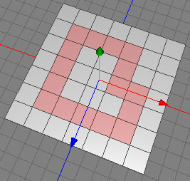

選択リングカットツール
選択リングカットツールは任意のポリゴンに沿ってカットするツールです。詳しくは下図を参照してください。
 
選択したポリゴンに沿ってカットします。
モード
選択リングカットツールは編集中のポリゴンオブジェクトにのみ使用できます。また、ポリゴンモードの状態でしか使用できません。

選択リングカットツールを使うためには最初に編集したいポリゴンを選択します。両脇にポリゴンがあるポリゴンのエッジをマウスでクリックします。すると、選択されたポリゴンに沿ってポリゴンはカットされます。マウスボタンを押したままにしてマウスを動かすことによりカット位置を調整できます。shiftキーを押しながらマウスボタンを押したままでマウスを動かすと選択リングカットツールで追加したエッジを動かすことが出来ます。最後に、マウスボタンを押すのをやめると完了です。
キー
-
- shift : マウスボタンを押したままでshiftキーを押しながらマウスを動かすことにより選択リングカットツールで追加したエッジを法線方向に移動できます。
- shift : マウスボタンを押したままでshiftキーを押しながらマウスを動かすことにより選択リングカットツールで追加したエッジを法線方向に移動できます。
プロパティ
- カット後に選択する: 選択リングカットツールで追加したエッジを選択状態にするオプションです。